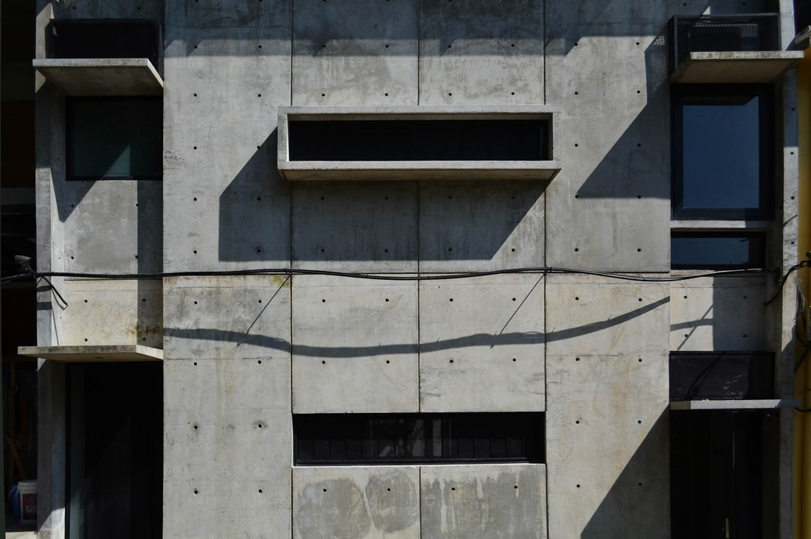
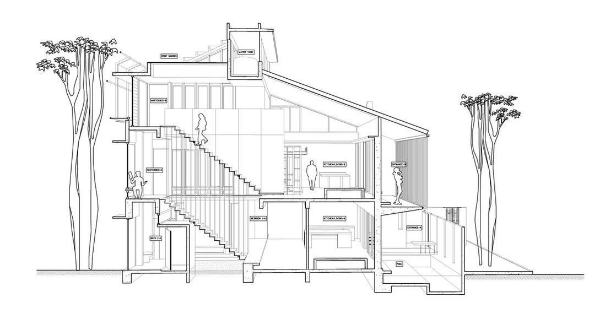

Duo Duplex
Year
2013
Type
Residential
The Duo Duplex is a three storey house built using the concept of interlocking multiple duplex blocks to form a singular construct.
Materials were engaged in a raw sense to exaggerate the duality of the complex; each material was chosen and formed accordingly to the idea present in each individual floor.
Materials were engaged in a raw sense to exaggerate the duality of the complex; each material was chosen and formed accordingly to the idea present in each individual floor.
Duplex 01
Housing the ground floor and the rear side of the first floor, the first duplex consists of a kitchen, living room and 2 en-suite bedrooms with baths. It is accessible through the front yard and a backdoor on the opposite side. The unit functions on its own as a studio and is connected to its subsequent with a stair core made of black steel sheet facing towards clear tempered glass; this not only allows high permeability of daylight, but also helps convey a sense transparency.
Duplex 02
Accessed through a flight of stairs, the second duplex encloses the front side of the first floor and its attic above. Parts of the duplex include a kitchen, living room that connects to a balcony, a mezzanine sleeping deck, an en-suite bedroom with a bathtub, and a roof garden. The layout of this unit is more structured in comparison to the duplex below. The doors, when folded to the sides, connects the living space with the kitchen revealing a larger space allowance. In compensation to the land's neighbouring borders, an additional floor was added in order to fit the third bedroom. The second duplex is also accessible through multiple access points that are separated from the preceding unit, this was done with the intent to make the house more user-friendly.
Housing the ground floor and the rear side of the first floor, the first duplex consists of a kitchen, living room and 2 en-suite bedrooms with baths. It is accessible through the front yard and a backdoor on the opposite side. The unit functions on its own as a studio and is connected to its subsequent with a stair core made of black steel sheet facing towards clear tempered glass; this not only allows high permeability of daylight, but also helps convey a sense transparency.
Duplex 02
Accessed through a flight of stairs, the second duplex encloses the front side of the first floor and its attic above. Parts of the duplex include a kitchen, living room that connects to a balcony, a mezzanine sleeping deck, an en-suite bedroom with a bathtub, and a roof garden. The layout of this unit is more structured in comparison to the duplex below. The doors, when folded to the sides, connects the living space with the kitchen revealing a larger space allowance. In compensation to the land's neighbouring borders, an additional floor was added in order to fit the third bedroom. The second duplex is also accessible through multiple access points that are separated from the preceding unit, this was done with the intent to make the house more user-friendly.



The intricate details and spatial planning put into the design was conscious towards its masculine construction type. The steel stairs, timber deck, courtyard and the roof garden all possess respective personalities of their own. It comes together to form the duplex as a whole, and to do so, conventional services and finishes were put to high attention as a subtlety.

Gravity pulls and gather rainwater down the weighted cables and into the pond below. This renders the need of rainwater pipe redundant.

The roof garden overlooks the scintillating skyline of Kuala Lumpur. It enhances the living essence within the space leaving one with a feeling of rejuvenation.

Fenestration employed within space to cultivate user's connection to nature at any given time.
×